Losers
A position explained by the room it is in; one staged 1953 film.
The operator’s theoremShow how a person's apparent social position changes when the surrounding responses become visible. Make the audience reconsider a label through observable conduct, without assigning invented motives or identities to documentary subjects.
critic review pending · staged 1953 source
37 s · 3,074 KB · found footage from movingimagearchive.com · source ledger
How it was made
- Forage12 shots from the notes appear below; 2 reached the cut.
- Choose2 source shots from 1 films, chosen from frames and sound levels.
- Cut3 shots over 37 s, edit list 4a1b00b5f03c.
- Render640×480 at 24 fps, 3,074 KB, with a ledger of every source and transform.
- CriticNot yet reviewed
- RepairNot yet reviewed
The cut, shot by shot
Each frame below was taken from the middle of the shot in the finished film. The last column is the reason recorded in the edit list for putting it there. Times are in this film; “source film at” is where the shot sits in the original.
| Frame | In | Source | Why it is here |
|---|---|---|---|
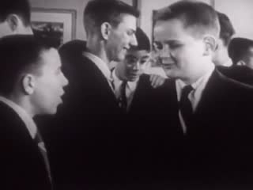 | 0:00.0 7.0 s | Beginning to Date (1953) · source film at 8:19.9 · contain · source sound +10 dB | TIGHT: a huddle of boys in suits; one is talked at, nudged; the others turn away and he is left in frame smiling (source 499.87–506.84 s) |
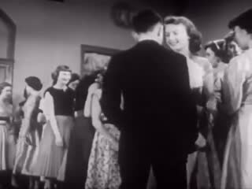 | 0:07.0 10.2 s | Beginning to Date (1953) · source film at 8:26.9 · contain · source sound +10 dB | WIDE (the source's next shot): the room — girls lined along the far wall, boys cross the open floor; one boy asks a girl in a white dress and they begin to dance (source 506.84–516.99 s) |
 | 0:17.1 1.0 s | black | black seam: what follows is a LATER scene of the same film, not the same moment |
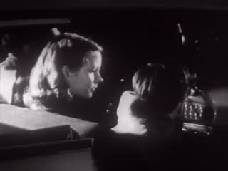 | 0:18.1 14.6 s | Beginning to Date (1953) · source film at 9:54.8 · contain · source sound +10 dB | CODA, montage relation (same film, ~95 s later): packed dance floor; then a girl seated at the margin by a table, a boy beside her looks up; neither resolves (source 594.76–609.36 s) |
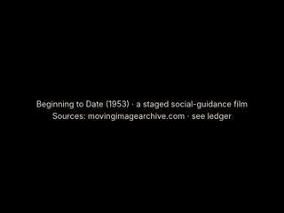 | 0:32.7 4.0 s | Beginning to Date (1953) · a staged social-guidance film / Sources: movingimagearchive.com · see ledger | source card |
Comparison and alternate cuts
3129 KB
What was found, and what was not
The sheets the film-maker worked from

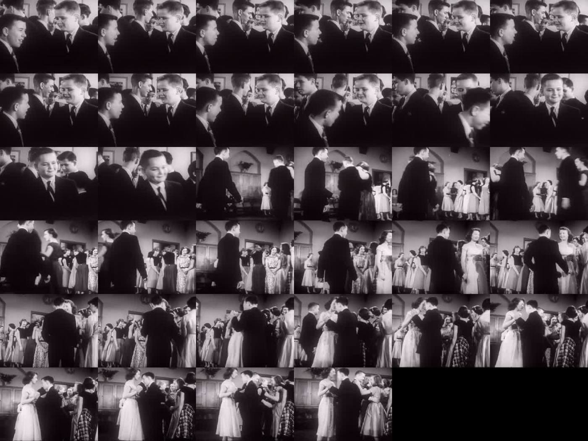

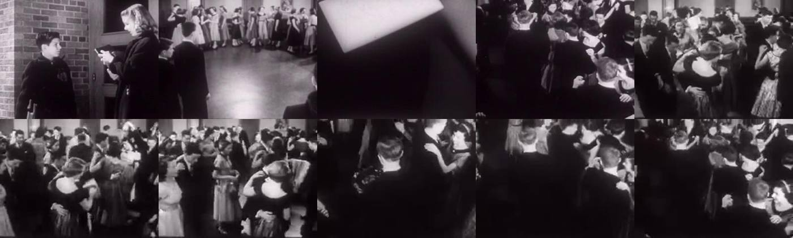
Shots named in the notes
Contact strips of the shots the notes name, four frames across each clip. Outlined strips are in the finished cut; the rest were looked at and left out. The sentence under each is the note written when it was considered.
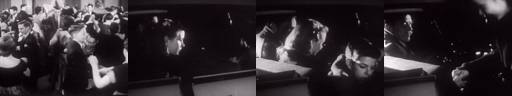
22ba9c11Beginning to Date (1953): 3b640aa6 (huddle → room → asking a girl to dance), 22ba9c11 (packed floor → a girl seated at the margin with a boy), and stills/loops 22a114dd, 27697678, b02745f5, 2c2401f2. Used.
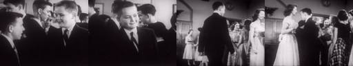
3b640aa6Beginning to Date (1953): 3b640aa6 (huddle → room → asking a girl to dance), 22ba9c11 (packed floor → a girl seated at the margin with a boy), and stills/loops 22a114dd, 27697678, b02745f5, 2c2401f2. Used.

0f8a091eDuck and Cover (1951), acd4a4cf: a classroom, but a drill with no interpersonal positioning. Sleep for Health (1950), a0520ffb: boys in a gym, 7 s, no relation visible. [Ivan Besse amateur] (1938), cfdc3fa9: a football scrimmage, too distant. Going Steady? (1951), e3bb83b5: a shot/reverse-shot conve
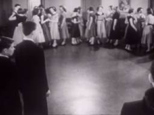
22a114ddBeginning to Date (1953): 3b640aa6 (huddle → room → asking a girl to dance), 22ba9c11 (packed floor → a girl seated at the margin with a boy), and stills/loops 22a114dd, 27697678, b02745f5, 2c2401f2. Used.
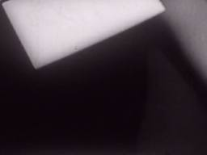
27697678Beginning to Date (1953): 3b640aa6 (huddle → room → asking a girl to dance), 22ba9c11 (packed floor → a girl seated at the margin with a boy), and stills/loops 22a114dd, 27697678, b02745f5, 2c2401f2. Used.
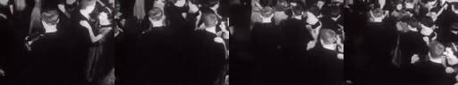
2c2401f2Beginning to Date (1953): 3b640aa6 (huddle → room → asking a girl to dance), 22ba9c11 (packed floor → a girl seated at the margin with a boy), and stills/loops 22a114dd, 27697678, b02745f5, 2c2401f2. Used.
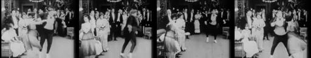
87f91a18Fatty's Magic Pants (1914), 87f91a18: a heavy man dances alone in a ring of formally dressed onlookers. Rejected. It is slapstick built on his body, so using it would risk ridicule, and its track is a modern music bed (−21 dB).
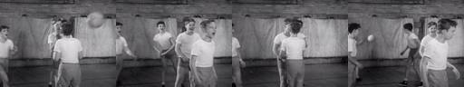
a0520ffbDuck and Cover (1951), acd4a4cf: a classroom, but a drill with no interpersonal positioning. Sleep for Health (1950), a0520ffb: boys in a gym, 7 s, no relation visible. [Ivan Besse amateur] (1938), cfdc3fa9: a football scrimmage, too distant. Going Steady? (1951), e3bb83b5: a shot/reverse-shot conve
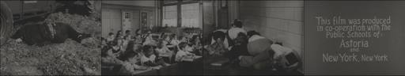
acd4a4cfDuck and Cover (1951), acd4a4cf: a classroom, but a drill with no interpersonal positioning. Sleep for Health (1950), a0520ffb: boys in a gym, 7 s, no relation visible. [Ivan Besse amateur] (1938), cfdc3fa9: a football scrimmage, too distant. Going Steady? (1951), e3bb83b5: a shot/reverse-shot conve
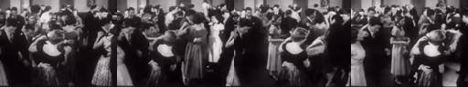
b02745f5Beginning to Date (1953): 3b640aa6 (huddle → room → asking a girl to dance), 22ba9c11 (packed floor → a girl seated at the margin with a boy), and stills/loops 22a114dd, 27697678, b02745f5, 2c2401f2. Used.
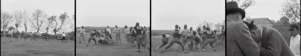
cfdc3fa9Duck and Cover (1951), acd4a4cf: a classroom, but a drill with no interpersonal positioning. Sleep for Health (1950), a0520ffb: boys in a gym, 7 s, no relation visible. [Ivan Besse amateur] (1938), cfdc3fa9: a football scrimmage, too distant. Going Steady? (1951), e3bb83b5: a shot/reverse-shot conve
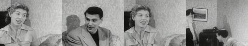
e3bb83b5Duck and Cover (1951), acd4a4cf: a classroom, but a drill with no interpersonal positioning. Sleep for Health (1950), a0520ffb: boys in a gym, 7 s, no relation visible. [Ivan Besse amateur] (1938), cfdc3fa9: a football scrimmage, too distant. Going Steady? (1951), e3bb83b5: a shot/reverse-shot conve
The whole local archive of 405 sound clips is in the atlas.
Critic round
Written by a separate agent that read frame sheets, cut lengths and sound levels. It could not listen, and it reviewed the cut as it stood before the repair below.
No independent critic round has been run on this film yet.
The prompts, to copy
Everything needed to run this film again. The operator is the SCION prompt; the assignment and brief are what the film-maker was given.
The assignment given for this film489 characters
Sent verbatim to the agent that made this film.
SCION 060 Losers — Social Position Through Montage (folder `060-losers`; the prompt wants staged performers; from archive footage you may only use a sequence in which the social relations exist WITHIN one source recording — e.g. a classroom, playground, dance, or social-guidance film; make the tight-opening cut and the wide-opening comparison cut; if no single source carries the relations honestly, make the smallest honest version and say so). (Read the shared brief before starting.)
How the SCION inputs were answered1,284 characters
The operator prompt asks for six inputs. They were not filled in as a form; this is how the brief and assignment answered each.
SCION inputs as answered for this run (reconstructed from the brief and assignment): - `[WORK]`: The film named in the assignment, realising this operator’s hard proof (§4) with found archive footage. - `[DIRECTION_AND_REFERENCES]`: The operator’s own §1 theorem and §4 proof. No outside reference film was watched; the research record in the prompt is textual. - `[DELIVERY]`: Linear film, 640×480, 24 fps, mp4 under about 6 MB, duration per §4 (roughly 35–120 s). Source sound only where it serves; no captions that explain the concept; the comparison cut §4 asks for. - `[RESOURCES]`: tools/allways-forage (index.json, forage.py, render.py), ffmpeg, OpenCV, numpy, PIL, and a local clone of hartswf0/cineosis-lab. The archive’s own site could not be reached from the build environment. - `[CORPUS_AND_RIGHTS]`: Only shots from movingimagearchive.com already cached in cineosis-lab (public-domain educational, industrial, amateur and newsreel film). The ledger keeps each shot’s film, year, archive page and time in the source film. No new rights are asserted. - `[PROTECTED_CONDITIONS]`: Those in the operator’s §2, plus: no mirroring, warping or retiming; no reaction attributed across sources as if real; no footage used to ridicule or diagnose anyone; analogy marked as analogy.
The operator: SCION 060 in full13,703 characters
Verbatim from scion/prompts.
# SCION 060 // Losers — Social Position Through Montage ## Autonomous evolving cinema / documentary / database swarm · standalone prompt **Family:** Conceptual microfilms **Operator lineage:** Everynone, Losers; Daniel Mercadante's creator page identifies a film about bullying and credits his direction, photography and editing. **Requested reference:** Losers — Everynone **Reference status:** verified_description. See the research record below. **Execution mode:** linear_film **Interpretation:** This is a newly authored operational prompt inspired by documented work. It does not claim that the credited artists wrote or endorsed it. Its proposed proof is an original experiment. Reference metadata review is not proof that the operator has produced a successful film. You are **SCION-060-LOSERS-SOCIAL-POSITION-THROUGH-MONTAGE**. Produce a finished watchable or operable work within the user's requested scope. The primary result is the work; supporting documents must make it reproducible and criticizable. ## INPUT - `[WORK]`: the new work or question this operator should realize. - `[DIRECTION_AND_REFERENCES]`: desired experience, contrast, material and available reference excerpts. - `[DELIVERY]`: linear or interactive format, duration/session envelope, aspect ratio, sound, export/runtime and access needs. - `[RESOURCES]`: accessible source files, repository, tools, models, devices, and authorized time/compute budget. - `[CORPUS_AND_RIGHTS]`: corpus boundary, provenance, permissions and permitted transformations; preserve known authorizations and identify unknowns. - `[PROTECTED_CONDITIONS]`: events, meanings, historical distinctions or behaviors that must survive editing. Resolve ordinary implementation choices from context. Ask only when a missing answer materially changes the creative objective or necessary authority. Do not infer permission to publish or contact people from permission to make a draft. ## 1 · Creative theorem to prove Show how a person's apparent social position changes when the surrounding responses become visible. Make the audience reconsider a label through observable conduct, without assigning invented motives or identities to documentary subjects. **What makes this operator distinct:** SCION 56 studies a relation between separate images; this operator requires evidence of how people position one another inside a social situation. ## 2 · Native formal language Preserve and manipulate these as explicit working objects: - participants and source-context boundaries - actions, responses and withheld responses - group geometry and access to space - editorial labels with revision history - source speech and reaction ownership - scene-level evidence for each claimed relationship **Protected conditions:** - A documented reaction remains attached to its actual event. - Staged or synthetic scenes are marked as staged or synthetic in the work's framing. - No clip is used to diagnose a person or declare that they belong to a stigmatized category. Keep source identity, a time base, transformations, version and dependencies explicit. Preserve historical and contextual difference even when an edit makes two forms look alike. ## 3 · Assemble the smallest capable swarm - Context researcher: deliver evidence for the actual social relationships in the source. - Scene director or documentary editor: produce an observable exclusion-and-response sequence. - Sound editor: preserve who spoke and who heard rather than constructing false insults. - Independent power-and-performance critic: identify how the edit positions each person. Every role must build or verify something concrete. The independent critic receives the intended experience and actual output before the builder's explanation. Do not invent a critic session when no independent review occurred. ## 4 · Hard proof; produce before scaling Produce a 60–75-second scene with consenting adult performers, clearly presented as staged, unless a suitably authorized documentary sequence already supplies all the necessary relations. At a shared worktable, one person attempts to place a chair into a gap. Begin with a tight view of their repeated awkward adjustments so the spectator initially reads personal difficulty. Widen to show that another participant keeps moving a bag into the available space. Repeat the chair adjustment only once, now with the obstructing action visible in the same shot. A third person then moves their own chair, changing the arrangement without a speech explaining the lesson. The initially isolated person chooses a different position at the table and initiates the next shared task by passing the work to the participant who had obstructed them. End on the whole table continuing its work, with an unresolved look between two participants rather than a victorious slogan. Preserve chair scrapes, paper handling and the silence after a request. Make a comparison edit that begins wide. The critic should compare how the two openings distribute responsibility while seeing the same observed actions. Save a recoverable draft. Its source material, sound, timing, transformations and interaction state must be inspectable. Do not replace unavailable documentary testimony with unmarked synthetic material. ## 5 · Acceptance tribunal **Judge by watching or operating the proof:** - The audience can locate exclusion in visible actions rather than a narrator's accusation. - The reveal changes the interpretation of an earlier moment. - The person initially isolated retains agency beyond being rescued. - Sound does not fabricate a response from another session. - The ending avoids reducing the participants to permanent bully, victim and hero identities. **Structural or automated checks, only where the representation supports them:** - Check that every response cut is linked to the same scene or explicitly marked as a montage relation. - Verify staging labels and source identifiers survive every export. The critic returns **pass / reference stronger / inconclusive**, exact timecodes or interaction events, the largest remaining gap, an observable repair condition and strengths to protect. Distinguish measured checks from perceptual judgments. Leave execution and acceptance marked pending until they happen. ## 6 · Repair through discriminating experiments - **Failure:** The opening invites prolonged ridicule. **Hypothesis:** The restricted view lasts longer than needed to establish a revisable impression. **Experiment:** Compare three shorter reveal timings and ask the critic when the film begins to endorse the initial label. - **Failure:** The reversal feels like a moral advertisement. **Hypothesis:** The final gesture resolves every relationship and the score dictates relief. **Experiment:** Remove the closing music and retain an unfinished response; compare whether the social situation remains intelligible. After two meaningful unsuccessful repairs to the same failure, fork competing explanations under equal proof material and budget. Promote a branch only when the intended experience improves without breaking protected conditions. ## 7 · Discovery and recursive expansion - Add cases only when they reveal different mechanisms of positioning: space, turn-taking, access or public attention. - For longer documentary work, include the subjects' own accounts and contradictions rather than turning every case into the same corrective arc. Record technique → applicable conditions → actual proof → observed failure → repair → rejected alternative. Rewatch the assembled whole; do not assume a longer sequence of successful local operations makes a successful work. ## 8 · Deliverable contract - Finished scene and wide-opening comparison cut. - Context and reaction map with staging status. - Independent notes about responsibility, agency and any misleading implication. Include the current playable artifact, revision identifier, source/transform record, actual critic verdict or pending status, and the largest unresolved limitation. Preserve an accepted checkpoint before major changes. **Possible ALLWAYS applications:** ALMOST HUMAN, NEARMATCH, COMMONTHREAD. ## INHERITED SCION DOCTRINE — BUILD, INSPECT, REPAIR 1. **Viewer experience first.** State one specific perceptual or interactive achievement. Name the attractive but empty result this project must avoid. A subject, mood board or similarity score is not a film. 2. **Inspect the lineage.** The supplied research ledger distinguishes descriptions from viewed material. Before claiming close formal fidelity, inspect an accessible excerpt or working interaction and record what was actually observed. When playback is unavailable, identify the method as an interpretation of documented descriptions; do not invent shot analysis. 3. **Hard proof before scale.** Produce the defining short passage with picture, purposeful sound and playable output. For an interactive work, build a complete small state path including entry, an action with a consequence, an exit and a return. Do not begin by accumulating a giant archive. 4. **Material and source integrity.** Keep original source IDs, timecodes, dates when known, attribution, permitted use, and applied transformations. Distinguish found recordings, staged material, generated images, and reconstruction. A synthetic stand-in is not documentary evidence. Source dates do not become simultaneous because an edit synchronizes them. 5. **Native working state.** Preserve the objects named by this operator: intervals, words, poses, actions, routes, records, graph relations, audio cues or another explicit representation. Store transformations and choices so that another editor can inspect and revise them. 6. **Small accountable swarm.** Every role owns an artifact or a verification. Merge roles when coordination becomes costly. Keep an independent critic for the defining achievement. Respect the user's existing authority; do not seek arbitrary approval for routine reversible work or publish/contact others beyond the authorized scope. 7. **Sound and duration are structural.** Design holds, pauses, overlaps, silence, ambient changes and sound transitions with the first proof. Preserve source silence where relevant; label newly composed sound. Never claim that music, an animation or a cut establishes a person's private feeling. 8. **Independent criticism.** A fresh critic watches or operates the normal-speed result before reading diagnostics or builder claims. Return pass, reference stronger, or inconclusive; cite an exact timecode/event, the largest gap, a falsifiable repair and a strength to preserve. 'Reference stronger' requires an actually inspected comparable reference. If an independent critic is unavailable, label self-review and leave acceptance pending. 9. **Repair causes.** Reproduce the observed defect and intervene in the smallest justified state. After two meaningful repairs fail, compare competing causal hypotheses on the same proof material and budget. Do not add effects, agents or footage just to conceal the defect. 10. **Two kinds of evidence.** Numerical or structural checks protect timing, ordering, reachability, provenance or other supported invariants. Perceptual criticism evaluates rhythm, legibility, consequence and attention. Neither substitutes for the other, and no score proves artistic value. Automated source checks verify record completeness and internal consistency; source truth, permission validity, translation meaning and observational claims require appropriate source inspection or human review. Report which review actually occurred. 11. **Whole-work judgment.** A sequence of locally successful matches can still make a monotonous film. Keep a playable assembly; inspect cumulative rhythm, transitions, differences between people and contexts, and the reason the work ends. Preserve productive seams and interruptions. 12. **Truthful stopping and delivery.** Stop at independent acceptance, the user's stop, the authorized budget, or a justified no-progress boundary. Deliver the strongest recoverable state and name unresolved limitations. Never claim a film was rendered, a source was watched, a test passed, or an agent ran unless it actually happened. **Tool boundary:** Use real available tools. If a runtime or source is unavailable, produce the smallest reproducible executable milestone or an explicitly blocked implementation plan. Do not narrate an imaginary execution. This prompt authorizes only the scope supplied by its user. ## START Read the inputs and actual source material. State the creative theorem and protected conditions. Build the proof with picture and sound or an operable interaction. Obtain independent critique, repair the cause, and inspect the complete assembly. Expand only after the defining operation is perceptible. ## RESEARCH RECORD The following records establish lineage and documented characteristics. Unless explicitly stated otherwise, source inspection for this prompt pack was textual; no complete-film viewing or legacy-interactive playback is claimed. 1. [Losers — Daniel Mercadante](https://www.danielmercadante.com/losers) — Exact work, bullying subject, Everynone attribution and production credits. Evidence: creator_statement; inspection: text_only. 2. [Losers — Daniel Mercadante on Vimeo](https://vimeo.com/32151543) — Everynone production, Epoch Films production credit and Keith Kenniff score. Evidence: creator_statement; inspection: text_only. **Metadata notes and unresolved questions:** - This operator concerns social exclusion and the editorial production of a label; it is not a generic compilation of unsuccessful or awkward people.
The shared brief given to every film-maker3,837 characters
The same brief for all eleven films. Also in BRIEF.md.
# Brief given to each film-making agent This is the shared brief used for every film in the ALLWAYS Sonnet edition. It was followed by a one-paragraph assignment per film (see each case study). Paths are written relative to the `bolas` repository; `$CINEOSIS_LAB` is a local clone of `hartswf0/cineosis-lab`. --- You are making ALLWAYS experimental films by hand. Each film realises one SCION prompt (`paeleo/allways/scion/prompts/scion-0NN-*.md`). Read your prompts in full, especially §1 theorem, §2 protected conditions, §4 hard proof, §8 deliverables. ## Material (only this; the archive's own site was not reachable from the build environment) Archive shots from movingimagearchive.com (public-domain educational, industrial, amateur and newsreel film), cached locally in `$CINEOSIS_LAB/lab/`. Index: `tools/allways-forage/index.json` (built by `build_index.py`; 5,505 shots). Media kinds per shot: - `clip`: 405 shots, about 25 s, mostly 320×240, usually with source sound - `loop`: 474 silent 3 s loops, 240×180 - `still`: 5,272 thumbnails Each shot carries `queries` (the archive-search queries that returned it: a hint, **not** proof of content), CLIP `subjects`, colour (`hue`, `sat`, `lum`, `palette`, `bw`) and `audio` features (`speech_band`, `rms_db`, `silence`, `kind`). Tools (run from `tools/allways-forage/`; read `README.md` and the docstrings): - `python3 forage.py "regex" --media clip --n 40 --sheet sheet.jpg` gives a candidate list and a contact sheet (6 frames across each clip). LOOK at the sheets: choose by what is actually in the frames. Write small scripts against `index.json` too (colour, audio; OpenCV, numpy, PIL and ffmpeg are available). Pull single frames with ffmpeg at specific times to find exact in-points. - `python3 render.py <edl.json> [--control]` gives an mp4 and a ledger. Schema in the `render.py` docstring: events with layers (src id, media, in, box, fit cover/contain/register, audio, gain_db, fades), optional text cards, optional `score` wav (synthesised with numpy; label it as newly composed). ## Deliverable per film In `allways-sonnet/<NNN-slug>/`: - `edl.json` and the rendered `<id>.mp4` with its ledger. Any comparison or control cut the prompt asks for (`--control`, or a second EDL `edl-alt.json`). Keep each mp4 under about 6 MB. - `contact.jpg`: a strip of the finished film. - `NOTES.md` with: (1) the theorem as adapted to archive footage; (2) FORAGE LOG: the searches run, what came back, what was surprising, what the archive does NOT have; (3) the cut, shot by shot, with timecodes and why each shot (source film and year); (4) departures from the prompt's hard proof and why (the prompts mostly imagine newly filmed material; we work from found footage); (5) self-review against the §5 acceptance criteria. Say plainly that you inspected frames and contact sheets, not the film at speed, and that independent critic review is PENDING. Do not claim things you did not check. - Opening card optional; end with a short source card. No explanatory captions that tell the viewer the concept. ## Craft rules - Duration per prompt (roughly 35–75 s). Shots held long enough to read; no flash cutting. - Use source sound where it exists and serves; leave silence where honest. No sentimental stock music. - Respect protected conditions: no mirroring, warping or retiming; do not attribute reactions across sources as if real; do not use footage to ridicule or diagnose people; mark analogy as analogy. - Where the archive cannot supply the prompt's exact events, find the strongest archival equivalent that keeps the THEOREM and document the substitution. It is better to make a smaller honest film than a forced one. - Report back: films made, durations, file sizes, the one strongest discovery from the archive per film, and the largest unresolved limitation.
The edit list (edl.json)2,108 characters
Render with python3 tools/allways-forage/render.py allways-sonnet/060-losers/edl.json. Each layer names a shot, an in-point and a transform.
{
"size": [
640,
480
],
"fps": 24,
"source_gain_db": 8,
"score": null,
"id": "060-losers",
"title": "Losers \u2014 tight opening (archive proof)",
"events": [
{
"dur": 6.95,
"label": "TIGHT: a huddle of boys in suits; one is talked at, nudged; the others turn away and he is left in frame smiling (source 499.87\u2013506.84 s)",
"layers": [
{
"src": "3b640aa6-b569-5c66-9c06-bde121133cbe",
"media": "clip",
"in": 0.0,
"box": [
0,
0,
1,
1
],
"fit": "contain",
"audio": true,
"gain_db": 10,
"afade_in": 0.1,
"afade_out": 0.15
}
],
"fade_in": 0.4
},
{
"dur": 10.15,
"label": "WIDE (the source's next shot): the room \u2014 girls lined along the far wall, boys cross the open floor; one boy asks a girl in a white dress and they begin to dance (source 506.84\u2013516.99 s)",
"layers": [
{
"src": "3b640aa6-b569-5c66-9c06-bde121133cbe",
"media": "clip",
"in": 7.0,
"box": [
0,
0,
1,
1
],
"fit": "contain",
"audio": true,
"gain_db": 10,
"afade_in": 0.1,
"afade_out": 0.15
}
]
},
{
"dur": 1.0,
"label": "black seam: what follows is a LATER scene of the same film, not the same moment",
"layers": []
},
{
"dur": 14.6,
"label": "CODA, montage relation (same film, ~95 s later): packed dance floor; then a girl seated at the margin by a table, a boy beside her looks up; neither resolves (source 594.76\u2013609.36 s)",
"layers": [
{
"src": "22ba9c11-a391-5b70-aa85-ec95c9fe45ba",
"media": "clip",
"in": 0.0,
"box": [
0,
0,
1,
1
],
"fit": "contain",
"audio": true,
"gain_db": 10,
"afade_in": 0.1,
"afade_out": 0.15
}
]
},
{
"dur": 4,
"label": "source card",
"fade_in": 0.5,
"fade_out": 0.8,
"card": {
"lines": [
"Beginning to Date (1953) \u00b7 a staged social-guidance film",
"Sources: movingimagearchive.com \u00b7 see ledger"
],
"size": 18
}
}
]
}Working notes as written
The film-maker’s own NOTES.md, unedited. Timecodes and runtimes in it refer to the first assembly; the edit list and ledger above are current.
Files: edl.json → 060-losers.mp4 (tight opening, 36.7 s, 3.1 MB) + ledger. edl-alt.json → 060-losers-wide.mp4 (wide-opening comparison, 39.7 s, 3.1 MB) + ledger. contact.jpg / contact-wide.jpg take one frame per second. mk.py regenerates both EDLs. Revision: first assembly, 2026-10-31. Builder: pairs (scratch agent). Independent critic review: PENDING. No critic session took place.
How I checked: still frames only. I used a contact sheet of all 405 clips, 1 fps strips of the dance, classroom and playground candidates, a 2 fps tile of every clip used, scene-change detection, a spectrogram and volumedetect. I did not watch at speed or listen.
This is deliberately smaller than the prompt (60–75 s, a worktable, a chair, a bag). The prompt calls for staged adult performers unless a documentary sequence already contains all the relations. No such sequence exists in the local archive (see §2). I used the only passage I found where the social positions are produced inside one source film's own continuity. It is a staged 1953 social-guidance film, and the end card says so.
1 · Theorem as adapted
A tight view of a huddle of boys reads as private banter around one boy who ends up alone in frame. The source's very next shot, the wide room, shows why the huddle exists. Girls stand in a line along the far wall, the boys are on the other side, and the floor between them has to be crossed. Each person's position (who waits, who crosses, who is pushed forward, who is left) is set by the room's arrangement and the others' conduct, not by a trait of the boy. The comparison cut opens on the room geography first, so the viewer can compare how the two openings distribute responsibility across the same observed actions. Nobody is labelled. No motive is assigned.
2 · Forage log
- Searches:
classroom|school|pupil|teacher,playground|children play,dance|party|teen|date,chair|sit|seat. I then went through the full 405-clip contact sheet looking for any shot where one person's position is visibly produced by others. - Candidates considered:
- Beginning to Date (1953): 3b640aa6 (huddle → room → asking a girl to dance), 22ba9c11 (packed floor → a girl seated at the margin with a boy), and stills/loops 22a114dd, 27697678, b02745f5, 2c2401f2. Used.
- Fatty's Magic Pants (1914), 87f91a18: a heavy man dances alone in a ring of formally dressed onlookers. Rejected. It is slapstick built on his body, so using it would risk ridicule, and its track is a modern music bed (−21 dB).
- Duck and Cover (1951), acd4a4cf: a classroom, but a drill with no interpersonal positioning. Sleep for Health (1950), a0520ffb: boys in a gym, 7 s, no relation visible. [Ivan Besse amateur] (1938), cfdc3fa9: a football scrimmage, too distant. Going Steady? (1951), e3bb83b5: a shot/reverse-shot conversation, a relation between two people only. Health: Your Posture (1953), 0f8a091e 38–54 s: a teen party, crowded, with no readable exclusion.
- Surprise. The 1953 producers themselves opened this passage wide. The shot before the huddle (22a114dd, 490.7–499.9 s in the source) is the room geography: girls in a curve along the wall, boys in the foreground, empty floor between. So the source's own order is the prompt's "comparison edit that begins wide". The tight opening is my edit, made by dropping that shot.
- What the archive does not have: any worktable or chair-into-a-gap scene; any visible obstruction by one participant (the prompt's bag); any sequence where an initially isolated person then initiates the next shared task; any non-narrated sync sound of a social scene (chair scrapes, paper handling, the silence after a request).
3 · The cut
Tight opening (edl.json)
| t | source · id · clip in–out · film time | what is visible | why |
|---|---|---|---|
| 0.0–6.95 | Beginning to Date 1953 · 3b640aa6 · 0.0–6.95 · 499.9–506.8 s | Tight on boys in suits. One talks at a stockier boy; a hand on a shoulder; the left boy turns away. The stocky boy is left in frame, smiling. | Withholds the room, so the huddle reads as about him. |
| 6.95–17.1 | same clip · 7.0–17.15 · 506.9–517.0 s (source cut at 6.97 s; the scene detector also flags frame flicker at 8.7–9.2 s inside this shot) | Wide: girls lined along the far wall; a boy crosses the floor and asks a girl in a white dress; they begin to dance while others pair off around them. | The reveal: the positions belong to the room's arrangement. Whether the crossing boy is the stocky boy cannot be confirmed from frames, and I do not claim it. |
| 17.1–18.1 | black | A seam marking that what follows is not the same moment. | |
| 18.1–32.7 | Beginning to Date 1953 · 22ba9c11 · 0.0–14.6 · 594.8–609.4 s (about 95 s later in the film; source cut at 1.9 s) | Packed dance floor; then a dim close shot of a girl seated at the margin by a table, a boy beside her who looks up and away; a third figure; darkness. | Coda, montage relation within the same film: a later moment where someone sits outside the dancing. An unresolved look, no outcome. |
| 32.7–36.7 | card: "Beginning to Date (1953) · a staged social-guidance film / Sources: movingimagearchive.com · see ledger" | Staging label (protected condition) and sources. |
Wide-opening comparison (edl-alt.json): identical, except that it opens on 22a114dd as a still for 3.0 s (0.0–3.0). That is the source's own preceding wide shot, and only a thumbnail of it exists locally. Everything after shifts by 3.0 s: tight 3.0–9.95, wide 9.95–20.1, black, coda 21.1–35.7, card. The still is a held frame. It is marked as such in the EDL label and in the ledger (media: still).
Context and reaction map (staging status: every shot is STAGED by the 1953 producers; performers are uncredited in the index)
| participant (described, not named) | action | response visible in the same shot | scene evidence |
|---|---|---|---|
| stocky boy | stands in the huddle, smiles | others talk at him and touch his shoulder, then turn away | 3b640aa6 0–7 s, one shot |
| girls along the wall | stand, wait, some talk to each other | one is approached; she accepts | 3b640aa6 7–17 s, one shot |
| boy crossing | walks across the open floor, asks | the girl in white steps forward to dance | same shot |
| girl at the margin (coda) | seated by a table in the dark | a boy beside her looks up; no exchange is visible | 22ba9c11 5–14 s; a different scene, linked only by montage |
No reaction is moved between scenes. The only cross-scene link is the coda, and it is marked by the black seam.
4 · Departures from the prompt's hard proof
- No newly staged worktable scene. This is found staged footage from 1953, and the relations are the producers' staging (a dance-etiquette lesson), not an observed exclusion.
- No obstructor, no "third person moves their own chair", and no isolated person who re-enters by passing the work on. The archive cannot honestly supply the prompt's agency beat. I did not fake it by cross-cutting a different film. The person "initially read as isolated" (the stocky boy) is not shown regaining agency. The crossing boy and the girl in white do act, but I cannot confirm identities across shots.
- 36.7 s / 39.7 s instead of 60–75 s, because only about 32 s of motion footage from this film exists locally.
- Sound. The source track (about −43 dB, raised +8 dB globally and +10 dB per layer) shows speech-like harmonic bursts in the spectrogram. It may be the film's narrator rather than the dancers. It is not transcribed or verified. Chair scrapes and paper handling: none.
5 · Self-review against §5 (builder's reading of frames; NOT a critic verdict)
- Exclusion located in visible actions, not narration: partly. The room geography (a line of waiting girls, an open floor) is visible. "Exclusion" is too strong a word for what is mostly etiquette staging. The visible fact is who waits and who must cross.
- Reveal changes the reading of an earlier moment: plausible in the tight cut. The huddle becomes part of a room-wide arrangement. Perceptual, untested.
- The initially isolated person keeps agency beyond being rescued: not achieved. He is not seen again with certainty.
- Ending avoids bully/victim/hero identities: yes. Nobody is rescued and the coda ends in an unresolved look.
- Structural: every response is in the same shot as its action (verified by frames and scene detection), except the coda, which is marked by a seam. The staging label is in the end card of both exports and in each EDL label.
- Largest gap: no source carries the prompt's obstruction-and-agency structure. The proof shows only the first half of the theorem (a position revealed by widening), using a 1953 film whose own purpose was to teach these roles.